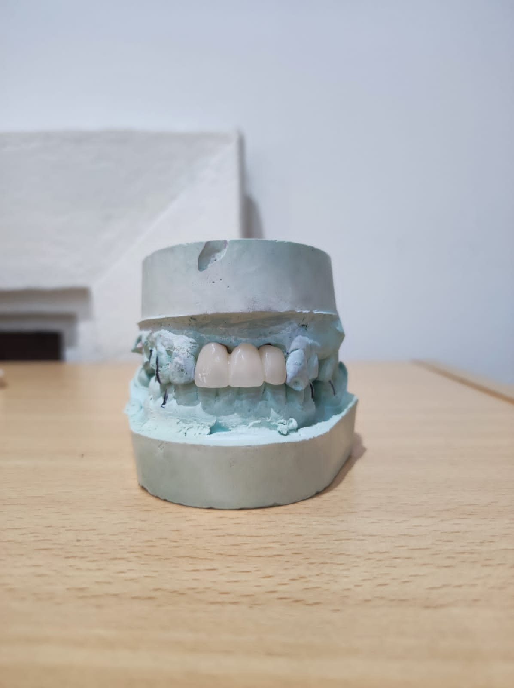

Puente de tres piezas de porcelana, sobre metal.
Prótesis inferior de porcelana.
Prótesis de zirconio finalizada para el paciente.
Prótesis de ceramage.
Puente parcial en impresión 3D de Zirconio.
Prótesis de porcelana de estado primario.
Puente de Zirconio en impresión 3D con Exocad.
Prótesis de cerámica.
Puente combinado de cerámica inferior.
Puente de cerámica inferior y superior.
Prótesis de ceramage impresa.
Puentes laterales de zirconio.